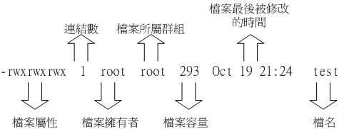
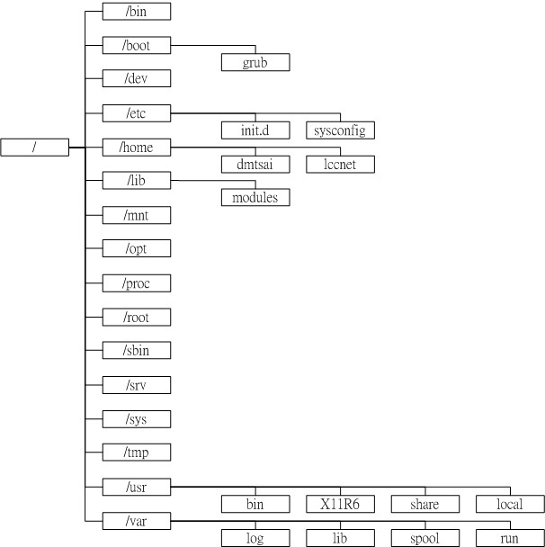

| |
最近更新日期：2005/08/05
本文已不再维护，更新文章请参考此处
|
Linux 最优秀的地方之一，就在于他的多人多任务的环境。
而为了让各个使用者具有较安全的管理机制，因此档案的权限管理就变的很重要了。
Linux 一般将档案可存取的方式分为三个类别，分别是 owner/group/other，
且各有 read/write/execute 等权限。若管理得当，将会让您的 Linux 主机变的较为安全。
另外，您如果首次接触 Linux 的话，那么，
在 Linux 底下这么多的目录/档案，到底代表什么意义呢？
底下我们就来一一介绍呢！
|
 使用者与群组 使用者与群组
经过前面一章的洗礼之后，您应该可以在 Linux 的指令列模式底下输入指令了吧？！
呵呵！接下来，当然是要让您好好的浏览一下 Linux 系统里面有哪些重要的档案啰。
不过，每个档案都有相当多的属性，其中最重要的可能就是档案的拥有者的概念了。
所以，在开始档案相关信息的介绍前，鸟哥先就简单的使用者及群组的概念作个说明吧～
好让您快点进入状况的哩！ ^_^
档案拥有者
初次接触 Linux 的朋友大概会觉得很怪异，怎么『Linux
有这么多使用者，还分什么群组，有什么用？』。
这个『用户与群组』的功能可是相当健全而好用的一个安全防护呢！怎么说呢？
由于 Linux 是个多人多任务的系统 ( 已经提过若干次啰！
)，因此可能常常会有多人同时使用这部主机来进行工作的情况发生，
为了考虑每个人的隐私权以及每个人的喜好的工作环境，
因此，这个『档案拥有者』的角色就显的相当的重要了！
例如当你将你的 e-mail
情书转存成档案之后，放在您自己的家目录，您总不希望被其他人看见自己的情书吧？
这个时候，你就把该档案设定成『只有档案拥有者，就是我，才能看与修改这个档案的内容』，
那么即使其他人知道你有这个相当『有趣』的档案，不过由于您有设定适当的权限，
所以其他人自然也就无法知道该档案的内容啰！
群组概念
那么群组呢？为何要配置文件案还有所属的群组？其实，
群组最简单的功能之一，就是当您在团队开发资源的时候最有用啦！
举个例子来说好了，假如在我的主机上面有两个团体，这第一个团体名称为
testgroup 而他的成员是 test1, test2, test3 三个，第二个团体名称为 treatgoup
他的团员为 treat1, treat2, treat3，这两个团体之间是互相有竞争性质的，
但是却又要缴交同一份报告，然而每组团员又需要同时可以修改自己的团体内任何人所建立的档案，
且不能让非自己团体的其他人看到自己的档案内容！这个时候怎么办？
呵呵！在 Linux 底下可就很简单啦！我可以经由简易的档案权限设定，就能限制非自己团队(
亦即是群组啰 )的其他人不能够阅览内容啰！而且亦可以让自己的团队成员可以修改我所建立的档案！
同时，如果我自己还有私人隐密的文件，仍然可以设定成让自己的团队成员也看不到我的档案数据。
很方便吧！
另外，如果 teacher 这个账号是 testgroup 与 treatgroup 这两个群组的老师，
他想要同时观察两者的进度，因此需要两边的群组都能够进去观看，这个时候，您可以设定
teacher 这个账号，『同时支持 testgroup 与 treatgroup 这两个群组！』，也就是说，
每个人都可以有多个群组的支持呢！
这样说或许你还不容易理解这个使用者与群组的关系吧？没关系，我们可以使用目前『家庭』的观念来进行解说喔！
假设有一家人，家里只有三兄弟，分别是王大毛、王二毛与王三毛三个人，
而这个家庭是登记在王大毛的名下的！所以，『王大毛家有三个人，分别是王大毛、王二毛与王三毛』，
而且这三个人都有自己的房间，并且共同拥有一个客厅喔！
- 由于王家三个人各自拥有自己的房间，所以，王二毛虽然可以进入王三毛的房间，
但是二毛不能翻三毛的抽屉喔！那样会被三毛
K 的！因为抽屉里面可能有三毛自己私人的东西，例如情书啦，日记啦等等的，
这是『私人的空间』，所以当然不能让二毛拿啰！
- 由于共同拥有客厅，所以王家三兄弟可以在客厅打开电视机啦、翻阅报纸啦、坐在沙发上面发呆啦等等的！
反正，只要是在客厅的玩意儿，三兄弟都可以使用喔！因为大家都是一家人嘛！
这样说来应该有点晓得了喔！那个『王大毛家』就是所谓的『群组』啰，
至于三兄弟就是分别为三个『使用者』，而这三个使用者是在同一个群组里面的喔！
而三个使用者虽然在同一群组内，但是我们可以设定『权限』，
好让某些用户个人的信息不被群组的所有人查询，以保有个人『私人的空间』啦！
而设定群组共享，则可让大家共同分享喔！
好了，那么今天又有个人，叫做张小猪，他是张小猪家的人，与王家没有关系啦！
这个时候，除非王家认识张小猪，然后开门让张小猪进来王家，否则张小猪永远没有办法进入王家，
更不要说进到王三毛的房间啦！不过，如果张小猪透过关系认识了三毛，并且跟王三毛成为好朋友，
那么张小猪就可以透过三毛进入王家啦！呵呵！没错！那个张小猪就是所谓的『其他人，
Others 』啰！
因此，我们就可以知道啦，在 Linux 里面，任何一个档案都具有『User,
Group 及 Others』三个权限！我们可以将上面的说明以底下的图示来解释：

图一、每个档案的拥有者、群组与其他人的示意图
此时，以王三毛为例，王三毛这个『档案』的拥有者为王三毛，他属于王大毛这个群组，
而张小猪相对于王三毛，则只是一个『其他人(others)』而已。
不过，这里有个特殊的人物要来介绍的，那就是『万能的天神』！这个天神具有无限的神力，
所以他可以到达任何他想要去的地方，呵呵！那个人在
Linux 系统中的身份代号是『 root 』啦！所以要小心喔！ 那个
root 可是『万能的天神』喔！
无论如何，『使用者身份』，与该使用者所支持的『群组』概念，在 Linux
的世界里面是相当的重要的，他可以帮助您让您的多任务 Linux 环境变的更容易管理！更详细的
『身份与群组』 设定，我们将在 账号管理
再进行解说。底下我们将针对文件系统与档案权限来进行说明。
在我们 Linux 系统当中，默认的情况下，所有的系统上的账号与一般身份使用者，还有那个 root
的相关信息，都是记录在 /etc/passwd 这个档案内的。至于密码则是记录在 /etc/shadow 这个档案下。
此外， Linux 所有的组名都纪录在 /etc/group 内！这三个档案可以说是
Linux 系统里面账号、密码、群组信息的集中地啰！不要随便删除这三个档案啊！ ^_^
至于更多的与账号群组有关的设定，还有这三个档案的格式，不要急，我们在第四篇讲到账号时，
会再跟大家详细的介绍的！这里先有概念即可。
Linux 档案权限概念
大致了解了 Linux 的使用者与群组之后，接着下来，我们要来谈一谈，
那么这个档案的权限要如何针对这些所谓的『使用者』与『群组』来设定该档案的权限呢？
这个部分是相当的重要的，尤其对于初学者来说，因为档案的权限与属性是学习
Linux 的一个相当重要的关卡，如果没有这部份的概念，那么您将老是听不懂别人在讲什么呢！
尤其是当您在您的屏幕前面出现了『Permission
deny』的时候，不要担心，『肯定是权限设定错误』啦！呵呵！好了，闲话不多聊，赶快来瞧一瞧先：
Linux 文件属性
嗯！既然要让你了解 Linux 的文件属性，那么有个重要的也是常用的指令就必须要先跟你说啰！那一个？！就是『
ls 』这一个 list 档案的指令啰！在你以 root
的身份登入 Linux 之后，下达『ls -al 』看看，会看到底下的几个咚咚：
[root@linux ~]# ls -al
total 248
drwxr-x--- 9 root root 4096 Jul 11 14:58 .
drwxr-xr-x 24 root root 4096 Jul 9 17:25 ..
-rw------- 1 root root 1491 Jun 25 08:53 anaconda-ks.cfg
-rw------- 1 root root 13823 Jul 10 23:12 .bash_history
-rw-r--r-- 1 root root 24 Dec 4 2004 .bash_logout
-rw-r--r-- 1 root root 191 Dec 4 2004 .bash_profile
-rw-r--r-- 1 root root 395 Jul 4 11:45 .bashrc
-rw-r--r-- 1 root root 100 Dec 4 2004 .cshrc
drwx------ 3 root root 4096 Jun 25 08:35 .ssh
-rw-r--r-- 1 root root 68495 Jun 25 08:53 install.log
-rw-r--r-- 1 root root 5976 Jun 25 08:53 install.log.syslog
[ 1 ][ 2 ][ 3 ][ 4 ][ 5 ][ 6 ][ 7 ]
[ 属性 ][链接][拥有者][群组][档案容量][ 修改日期 ][ 檔名 ]
|
ls 是『list』的意思，与在早期的 DOS 年代的指令 dir 类似功能。
而参数『-al』则表示列出所有的档案 ( 包含隐藏档，就是档名前面第一个字符为 . 的那种档案 )
。如上所示，在你第一次以 root 身份登入 Linux 时，如果你输入指令后，应该有上列的几个东西，
先解释一下上面七个字段个别的意思：

图二、文件属性的示意图
- 第一栏代表这个档案的属性：
这个地方最需要注意了！仔细看的话，你应该可以发现这一栏其实共有十个属性：

图三、档案的十个属性内容
- 第一个属性代表这个档案是『目录、档案或链接文件等等』：
- 当为[ d ]则是目录，例如上表的第 11 行；
- 当为[ - ]则是档案，例如上表的第 5 行；
- 若是[ l ]则表示为连结档(link file)；
- 若是[ b ]则表示为装置文件里面的可供储存的接口设备；
- 若是[ c ]则表示为装置文件里面的串行端口设备，例如键盘、鼠标。
- 接下来的属性中，三个为一组，且均为『rwx』
的三个参数的组合。其中，[ r ]代表可读(read)、[ w ]代表可写(write)、[ x ]代表可执行(execute)：
- 第一组为『拥有人的权限』，以第 5
行为例，该档案的拥有人可以读写，但不可执行；
- 第二组为『同群组的权限』；
- 第三组为『其他非本群组的权限』。
范例：若有一个档案的属性为『-rwxr-xr--』，简单的可由下面说明之：
[-][rwx][r-x][r--]
1 234 567 890
1 为：代表这个文件名为目录或档案（上面为档案）
234为：拥有人的权限（上面为可读、可写、可执行）
567为：同群组用户权力（上面为可读可执行）
890为：其他用户权力（上面为仅可读）
上面的属性情况代表一个档案、这个档案的拥有人可读可写可执行、但同群组的人仅可读与执行，
非同群组的使用者仅可读的意思！
除此之外，需要特别留意的是 x 这个标号！
若文件名为一个目录的时候，例如上表中的 .ssh 这个目录：
drwx------ 3 root root 4096 Jun 25 08:35 .ssh
|
可以看到这是一个目录，而且只有 root 可以读写与执行。但是若为底下的样式时，请问非 root
的其他人是否可以进入该目录呢？
drwxr--r-- 3 root root 4096 Jun 25 08:35 .ssh
|
咦！似乎好像是可以喔！因为有可读[ r ]存在嘛！『错！』答案是非 root
这个账号的其他使用者均不可进入 .ssh 这个目录，为什么呢？
因为 x 与 目录 的关系相当的重要，
如果您在该目录底下不能执行任何指令的话，那么自然也就无法进入了，因此，
请特别留意的是，如果您想要开放某个目录让一些人进来的话，
请记得将该目录的 x 属性给开放呦！至于目录的权限相关说明，
我们会在底下继续介绍的。
另外，你也必须要更加的小心的是，在 Windows
底下一个档案是否具有执行的能力是藉由『 附檔名 』来判断的，
例如：.exe, .bat, .com 等等，但是在 Linux 底下，
我们的档案是否能执行，则是藉由是否具有
x 这个属性来决定的！所以，跟档名是没有绝对的关系的！
这点还请特别留意呢！稍后我们还会针对目录来稍作说明的
- 第二栏表示为连结占用的节点 (i-node)：
这个跟连结档 (link file) 比较有关系，我们在未来的章节会再加以介绍的。
如果是目录的话，那么就与该目录下还有多少目录有关。
- 第三栏表示这个档案（或目录）的『拥有人』。
- 第四栏表示拥有人的群组。
这里再次解释一下，在 Linux 中，你的 ID ( 如 root 或 test 等账号均是所谓的
ID ) 即是你的身份，而且你还可以附属在一个或多个群组之下，例如刚刚我们上面提到的，你有一个团体
( 即群组 ) 代号为 testgroup ，且这个群体里有三个人，其代号分别是 test1,
test2, 与 test3，则这三个人为同一群组即 testgroup！那么如果以上图的的文件属性(-rwxrwx---)
来看，如果该档案属于
test1 所有，那么 test2, test3 亦有读、写、执行的权力，因为他们都属于同一个
group 呀！而如果您不是属于 test1, test2, test3 的任何一个人，也不属于 testgroup
这个群组时，那么您将不具备读、写、执行这个档案的权限了！
- 第五栏为这个档案的容量大小。
- 第六栏为这个档案的建档日期或者是最近的修改日期，
分别为月份、日期及时间。请特别留意，如果您是以繁体中文来进行安装您的
Linux 时，那么预设的语系可能会被改为中文。而
由于中文无法显示在文字型态的终端机上面，
所以这一栏会成为怪怪的乱码，这个时候，请修改一下
/etc/sysconfig/i18n 这个档案，里面的『 LC_TIME 』修改为：『 LC_TIME=en
』再储存离开，再登入一次，就可以得到英文字形显示的日期了！
那么如何修改该档案呢？呵呵！以 root 身份用 vi 修改。
另外，也可以使用『 LANG=en ls -al 』之类的语法来显示。
- 第七栏为这个档案的档名，
如果檔名之前多一个『 . 』，则代表这个档案为『隐藏档』，
例如上表第 6 行的『.bashrc_history』档名即是隐藏档，由于我们有下一个参数为
ls -al，所以连隐藏档都列出来，如果你只输入 ls 则档名有加『 . 』的档案就不会被显示出来！
Tips:
对于更详细的 ls 用法，还记得怎么查询吗？对啦！使用
man ls 或 info ls 去看看他的基础用法去！自我进修是很重要的，
因为『师傅带进门，修行在个人！』，自古只有天才学生，没有天才老师呦！加油吧！^_^
|  |
这七个字段的意义是很重要的！务必清楚的知道各个字段代表的意义呢！尤其是第一个字段的十个权限，
那是整个 Linux 档案权限的重点之一。底下我们来做几个简单的练习，您就会比较清楚啰！
假设 test1, test2, test3 同属于 testgroup 这个群组：
例题一：如果有下面的两个档案，请说明两个档案的拥有者与其相关的权限为何？
-rw-r--r-- 1 root root 238 Jun 18 17:22 test.txt
-rwxr-xr-- 1 test1 testgroup 5238 Jun 19 10:25 ping_tsai
答：
- 档案『 test.txt 』的拥有人为 root ，群组为 root 。至于权限方面则只有 root
这个账号可以存取此档案，其他人则仅能读此档案；
- 另一个档案『 ping_tsai 』的拥有人为 test1 ，而群组为 testgroup。其中，
test1 可以针对此档案具有可读可写可执行的权力，而同群组的 test2, test3 两个人与
test1 同样是 testgroup 的群组账号，则仅可读可执行但不能写 (亦即不能修改)，至于非
testgoup 这一个群组的人则仅可以读，不能写也不能执行！
|
例题二：如果我的目录为底下的样式，请问 testgroup 这个群组的成员与其他人( others )是否可以进入本目录？
drwxr-xr-- 1 test1 testgroup 5238 Jun 19 10:25 groups/
答：
- 档案拥有者 test1 可以在本目录中进行任何工作；
- 而 testgroup 这个群组的账号，例如 test2, test3 亦可以进入本目录进行工作，
但是不能在本目录下进行写入的动作；
- 至于 other 的权限中虽然有 r ，但是由于没有 x 的权限，因此 others 的使用者，并不能进入此目录！
|
Linux 文件属性的重要性：
与 Windows 系统不一样的是，在 Linux 系统（或者说 Unix-Like
系统）当中，每一个档案都多加了很多的属性进来，尤其是群组的概念，这样有什么用途呢？
基本上，最大的用途是在『安全性』上面的。举个简单的例子，在你的系统中，关于系统服务的档案通常只有
root 才能读写，或者是执行，例如 /etc/shadow
这一个账号管理的档案，由于该档案记录了你的系统中的所有账号的数据，因此是很重要的一个信息文件，
当然不能让任何人读取，只有
root 才能够来读取啰！所以该档案的属性就会成为 [ -rw-------
]啰！
那么，如果你有一个开发团队，在你的团队中，你希望每个人都可以使用某一些目录下的档案，
而非你的团队的其他人则不予以开放呢？以上面的例子来说，testgroup
的团队共有三个人，分别是 test1, test2, test3 ！那么我就可以将 test1 的文件属性订为
[ -rwxrwx--- ] 来提供给
testgroup 的工作团队使用啰！这可是相当重要的。
再举个例子来说，如果你的目录权限没有作好的话，可能造成其他人都可以在你的系统上面乱搞啰！例如本来只有
root 才能做的开关机、ADSL
的拨接程序、新增或删除用户等等的指令，若被你改成任何人都可以执行的话，
那么如果使用者不小心给你重新启动啦！重新拨接啦！等等的！那么你的系统不就会常常莫名其妙的挂掉啰！
而且万一你的用户的密码被其他不明人士取得的话，只要他登入你的系统就可以轻而易举的执行一些
root 的工作！可怕吧！因此，在你修改你的 linux 档案与目录的属性之前，
一定要先搞清楚，什么是可变的，什么是不可变的！千万注意啰！
如何改变档案权限
好了，我们已经知道档案权限对于一个系统的安全重要性了，也知道档案的权限对于使用者与群组的相关性了，
好了，那么如何修改一个档案的权限呢？又！有多少档案的权限我们可以修改呢？
其实一个档案的权限很多嘛！大致上我们先介绍几个简单的，例如：群组、拥有者、各种身份的权限等等。
- chgrp ：改变档案所属群组
- chown ：改变档案所属人
- chmod ：改变档案的属性、 SUID 、等等的特性
改变所属群组, chgrp
改变一个档案的群组真是很简单的，直接以 chgrp 来改变即可，咦！这个指令就是
change group 的缩写嘛！对啦！这样就很好记了吧！ ^_^。不过，请记得，
要改变成为的组名必须要在 /etc/group
里面存在的名称才行，否则就会显示错误！
假设您是以 root 的身份登入 FC4 ，那么在您的家目录内有一个 install.log 的档案，
如何将该档案的群组改变一下呢？假设您已经知道在 /etc/group 里面已经存在一个名为 users
的群组，但是 testing 这个群组名字就不存在 /etc/group 当中了，
此时改变群组成为 users 与 testing 会有什么现象发生呢？
[root@linux ~]# chgrp [-R] dirname/filename ...
参数：
-R : 进行递归( recursive )的持续变更，亦即连同次目录下的所有档案、目录
都更新成为这个群组之意。常常用在变更某一目录的情况。
范例：
[root@linux ~]# chgrp users install.log
[root@linux ~]# ls -l
-rw-r--r-- 1 root users 68495 Jun 25 08:53 install.log
[root@linux ~]# chgrp testing install.log
chgrp: invalid group name `testing' <== 发生错误讯息啰～找不到这个群组名～
|
发现了吗？档案的群组被改成 users 了，但是要改成 testing 的时候，
就会发生错误～注意喔！发生错误讯息还是要努力的查一查错误讯息的内容才好！
改变档案拥有者, chown
好了，那么如何改变一个档案的拥有者呢？很简单呀！既然改变群组是 change group
，那么改变拥有者就是 change owner 啰！BINGO，对啦！那就是 chown
这个指令的用途，要注意的是，用户必须是已经存在系统中的，也就是在
/etc/passwd 这个档案中有纪录的用户名称才行改变。
chown 的用途还满多的，他还可以顺便直接修改群组的名称呢！此外，
如果要连目录下的所有次目录或档案同时更改档案拥有者的话，直接加上
-R 的参数即可！我们来看看语法与范例：
[root@linux ~]# chown [-R] 账号名称 档案或目录
[root@linux ~]# chown [-R] 账号名称:组名 档案或目录
参数：
-R : 进行递归( recursive )的持续变更，亦即连同次目录下的所有档案、目录
都更新成为这个群组之意。常常用在变更某一目录的情况。
范例：
[root@linux ~]# chown bin install.log
[root@linux ~]# ls -l
-rw-r--r-- 1 bin users 68495 Jun 25 08:53 install.log
[root@linux ~]# chown root:root install.log
[root@linux ~]# ls -l
-rw-r--r-- 1 root root 68495 Jun 25 08:53 install.log
|
嗯！知道如何改变档案的群组与拥有者了，那么什么时候要使用 chown 或 chgrp
呢？！或许您会觉得奇怪吧？！是的，确实有时候需要变更档案的拥有者的，
最常见的例子就是在 copy 档案给你之外的其他人时，我们使用最简单的 cp 来说明好了：
[root@linux ~]# cp 来源档案 目标文件
|
假设您今天要将 .bashrc 这个档案拷贝成为 .bashrc_test ，且是要给 bin 这个人，您可以这样做：
[root@linux ~]# cp .bashrc .bashrc_test
[root@linux ~]# ls -al .bashrc*
-rw-r--r-- 1 root root 395 Jul 4 11:45 .bashrc
-rw-r--r-- 1 root root 395 Jul 13 11:31 .bashrc_test
|
哇！怎么办？ .bashrc_test 还是属于 root 所有，如此一来，即使你将档案拿给 bin
这个使用者了，那他仍然无法修改的( 看属性就知道了吧！ )，
所以你就必须要将这个档案的拥有者与群组修改一下啰！知道如何修改了吧！？呵呵！
改变九个属性, chmod
文件属性的改变使用的是 chmod 这个指令，但是，属性的设定方法有两种，
分别可以使用数字或者是符号来进行属性的变更。我们就来谈一谈：
数字类型改变档案权限
Linux 档案的基本属性就有九个，分别是 owner/group/others 组别的 read/write/execute 属性，
先复习一下刚刚上面提到的数据：
这九个属性是三个三个一组的！其中，我们可以使用数字来代表各个属性，各属性的对照表如下：
同一组 (owner/group/others) 的三个属性 (r/w/x) 是需要累加的，例如当属性为
[-rwxrwx---] 则是：
owner = rwx = 4+2+1 = 7
group = rwx = 4+2+1 = 7
others= --- = 0+0+0 = 0
所以等一下我们设定属性的变更时，该属性的数字就是 770 啦！变更属性的指令 chmod 的语法是这样的：
[root@linux ~]# chmod [-R] xyz 档案或目录
参数：
xyz : 就是刚刚提到的数字类型的权限属性，为 rwx 属性数值的相加。
-R : 进行递归( recursive )的持续变更，亦即连同次目录下的所有档案、目录
都更新成为这个群组之意。常常用在变更某一目录的情况。
|
举例来说，如果要将 .bashrc 这个档案所有的属性都打开，那么就下达：
[root@linux ~]# ls -al .bashrc
-rw-r--r-- 1 root root 395 Jul 4 11:45 .bashrc
[root@linux ~]# chmod 777 .bashrc
[root@linux ~]# ls -al .bashrc
-rwxrwxrwx 1 root root 395 Jul 4 11:45 .bashrc
|
看到了吗？属性改变了喔！由于一个档案有三组属性，所以你可以发现上面 777
为三组，而由于我们将所有的属性都打开，所以数字都相加，亦即『
r+w+x = 4+2+1 = 7』
那如果要将属性变成『 -rwxr-xr-- 』呢？那么就成为
[4+2+1][4+0+1][4+0+0]=754 啰！所以你需要下达
chmod 754 filename。
最常发生的一个问题就是，常常我们以 vi 编辑一个 shell 的文本文件后，他的属性通常是
-rw-rw-rw- 也就是 666 的属性，如果要将他变成可执行文件，并且不要让其他人修改此一档案的话，
那么就需要 -rwxr-xr-x 这一个 755 的属性，所以
chmod 755 test.sh 就需要这样做啰！
另外，有些档案你不希望被其他人看到，例如 -rwxr-----，那么就下达
chmod 740 filename 吧！
例题三：将刚刚您的 .bashrc 这个档案的属性改回原来的 -rw-r--r--
答：
|
还有一个改变属性的方法呦！从之前的介绍中我们可以发现，基本上就九个属性分别是(1)user
(2)group (3)others 三群啦！那么我们就可以藉由 u, g, o
来代表三群的属性！此外， a 则代表 all
亦即全部的三群！那么读写的属性就可以写成了 r, w, x 啰！也就是可以使用底下的方式来看：
| chmod | u
g
o
a |
+(加入)
-(除去)
=(设定) |
r
w
x | 档案或目录 |
来实作一下吧！假如我们要『设定』一个档案的属性为『-rwxr-xr-x』时，基本上就是：
- user (u)：具有可读、可写、可执行的权限；
- group 与 others (g/o)：具有可读与执行的权限。
所以就是：
[root@linux ~]# chmod u=rwx,go=rx .bashrc
# 注意喔！那个 u=rwx,go=rx 是连在一起的，中间并没有任何空格符！
[root@linux ~]# ls -al .bashrc
-rwxr-xr-x 1 root root 395 Jul 4 11:45 .bashrc
|
请注意， u=rwx,og=rx 这一段文字之间并没有空格符隔开呦！不要搞错啰！
那么假如是『 -rwxr-xr-- 』？可以使用『 chmod u=rwx,g=rx,o=r filename
』来设定。此外，如果我不知道原先的文件属性，而我只想要增加 .bashrc
这个档案的每个人均可写入的权限，那么我就可以使用：
[root@linux ~]# ls -al .bashrc
-rwxr-xr-x 1 root root 395 Jul 4 11:45 .bashrc
[root@linux ~]# chmod a+w .bashrc
[root@linux ~]# ls -al .bashrc
-rwxrwxrwx 1 root root 395 Jul 4 11:45 .bashrc
|
而如果是要将属性去掉而不更动其他的属性呢？！例如要拿掉所有人的 x 的属性，则：
[root@linux ~]# chmod a-x .bashrc
[root@linux ~]# ls -al .bashrc
-rw-rw-rw- 1 root root 395 Jul 4 11:45 .bashrc
|
知道 +, -, = 的不同点了吗？对啦！ + 与 – 的状态下，只要是没有指定到的项目，
则该属性『不会被变动』，例如上面的例子中，由于仅以
– 拿掉 x 则其他两个保持当时的值不变！呵呵！多多实作一下，你就会知道如何改变属性啰！
这在某些情况底下很好用的～举例来说，您想要教一个朋友如何让一个程序可以拥有执行的权限，
但您又不知道该档案原本的权限为何，此时，利用 chmod a+x filename ，就可以让该程序拥有执行的权限了。
是否很方便？
目录属性的意义：
刚刚上面我们提到的属性几乎都是针对一般档案的特性在说明，那么如果是针对目录时，
那个 r, w, x 对目录是什么意义呢？简单的说：
- r (read contents in directory)：
表示具有读取目录结构列表的权限，所以当您具有读取 (r) 一个目录的权限时，
您就可以利用 ls 这个指令将该目录的内容列表显示出来！
- w (modify contents of directory)：
这个可写入的权限对目录来说，是很了不起的！
因为他表示您将具有异动该目录结构列表的权限，也就是底下这些权限：
- 建立新的档案与目录；
- 删除已经存在的档案与目录(不论该档案是属于谁的！)
- 将已存在的档案或目录进行更名；
- 搬移该目录内的档案、目录位置。
所以说，如果您是一般身份使用者，例如鸟哥的账号 dmtsai ，那么在 /home/dmtsai 这个家目录内，
无论是谁 (包括 root) 建立的档案，无论该档案属于谁，无论该档案的属性是什么，
dmtsai 这个使用者都『有权力将该档案删除』的喔！
- x (access directory)：
这个在上头我们已经稍微提过了，这个 x 与能否进入该目录有关呢！
好了，那么我们来简单的做个测试看看，底下可能会有很多您没有见过的指令，
不要担心，先照著作看看，等到未来提到该指令时，您自然就会了解了。
[root@linux ~]# cd /tmp
[root@linux tmp]# mkdir testing
[root@linux tmp]# chmod 744 testing
[root@linux tmp]# touch testing/testing
[root@linux tmp]# chmod 600 testing/testing
# 这个 mkdir 是在建立目录用的指令！是 make directory 的缩写。
# 我们用 root 的身份在 /tmp 底下建立一个名为 testing 的目录，
# 并且将该目录的权限变为 744 ，该目录的拥有者为 root 喔！
# 另外， touch 可以用来建立一个没有内容的档案，因此， touch testing/testing
# 可以建立一个空的 /tmp/testing/testing 档案喔！
[root@linux tmp]# ls -al
drwxr--r-- 2 root root 4096 Jul 14 01:05 testing
# 仔细看一下，目录的权限是 744 ，且所属群组与使用者均是 root 喔！
# 接下来，我们将 root 的身份切换成为一般身份使用者。
# 鸟哥的系统里面有个 dmtsai 的一般身份使用者账号，所以切换身份成为 dmtsai
[root@linux tmp]# su dmtsai
# 那个 su 的指令是用来『变换身份』的一个指令，我们未来会详细介绍。
# 注意看，底下这一行中，发现使用者变为 dmtsai 了，而且提示字符变成 $ 了！
# 也就是说，现在操作系统的人变成 dmtsai 了！那么 dmtsai 这个人对于
# /tmp/testing 是属于 others 的权限，那他可以对 /tmp/testing 干嘛？
[dmtsai@linux tmp]$ ls -l testing <== 此时身份为 dmtsai
total 0
?--------- ? ? ? ? ? testing
# 可以查阅里面的信息喔！因为dmtsai 具有 r 的权限，不过，毕竟权限不够，
# 很多资料竟然是问号 (?) 来的～怪怪的紧～
[dmtsai@linux tmp]$ cd testing <== 此时身份为 dmtsai
bash: cd: testing/: Permission denied
# 发现了吗？即使我们具有 r 的权限，但是没有 x ，所以
# dmtsai 无法进入 /tmp/testing 喔！
[dmtsai@linux tmp]$ exit
[root@linux tmp]# chown dmtsai testing
# 使用 exit 就可以离开 su 的功能了。我们将这个 testing 目录的拥有者设定为
# dmtsai ，此时 dmtsai 就成为 owner 了，那么这个使用者又能干麻呢？
[root@linux tmp]# su dmtsai
[dmtsai@linux tmp]$ cd testing <== 此时身份为 dmtsai
[dmtsai@linux testing]$ ls -l <== 此时身份为 dmtsai
-rw------- 1 root root 0 Jul 14 01:13 testing
# 再切换身份成为 dmtsai ，此时就能够进入 testing 了！查阅一下内容。
# 发现了 testing 这个档案存在喔！权限是只有 root 才能够存取～
# 那我们测试一下能否删除呢？
[dmtsai@linux testing]$ rm testing <== 此时身份为 dmtsai
rm: remove write-protected regular empty file `testing'? y
# 竟然可以删除！这样理解了吗？！
|
透过上面这个简单的步骤，您就可以清楚的知道， x 在目录当中是与『能否进入该目录』有关，
至于那个 w 则具有相当重要的权限，因为他可以让使用者删除、更新、新建档案或目录，
是个很重要的参数啊！这样可以理解了吗？！ ^_^
Linux 档案种类与附档名
我们在学习 Linux 之前，就跟大家灌输过一个概念，那就是，任何装置在 Linux 底下都是档案，
不仅如此，连数据沟通的接口也有专属的档案在负责～所以，您会了解到， Linux 的档案种类真的很多～
除了前面提到的那个 -, d 亦即所谓的一般档案与目录档案之外，还有哪些种类的档案呢？
档案种类：
我们在刚刚的属性介绍中提到了最前面的标志 ( d 或 - )
可以代表目录或档案，那就是不同的档案种类啦！Linux 的档案种类主要有底下这几种：
- 正规档案 (regular file )：
就是一般我们在进行存取的类型的档案，在由 ls –al 所显示出来的属性方面，第一个属性为
[ - ]，例如 [-rwxrwxrwx ]。另外，依照档案的内容，又大略可以分为：
- 纯文本档(ASCII)：这是 Unix
系统中最多的一种文件类型啰，称为纯文本档是因为内容为我们人类可以直接读到的资料，
例如数字、字母等等。几乎只要我们可以用来做为设定的档案都属于这一种文件类型。
举例来说，您可以下达『 cat ~/.bashrc 』就可以看到该档案的内容。
(cat 是将一个档案内容读出来的指令)
- 二进制文件(binary)：还记得我们在『
Linux 是什么 』那一章里面的 GNU 发展史中提过，
我们的系统其实仅认识且可以执行二进制文件 (binary file) 吧？没错～
您的 Linux 当中的可执行文件 (scripts, 文字型批处理文件不算) 就是这种格式的啦～
举例来说，刚刚下达的指令 cat 就是一个 binary file 。
- 数据格式文件(data)：
有些程序在运作的过程当中会读取某些特定格式的档案，那些特定格式的档案可以被称为数据文件
(data file)。举例来说，我们的 Linux 在使用者登入时，都会将登录的数据记录在
/var/log/wtmp 那个档案内，该档案是一个 data file ，他能够透过 last 这个指令读出来！
但是使用 cat 时，会读出乱码～因为他是属于一种特殊格式的档案。瞭乎？
- 目录 (directory)：就是目录啰～第一个属性为
[ d ]，例如 [drwxrwxrwx]。
- 连结档 (link)：就是类似 Windows 底下的快捷方式啦！第一个属性为 [ l ]，
例如 [lrwxrwxrwx] ；
- 设备与装置文件 (device)：与系统周边及储存等相关的一些档案，
通常都集中在 /dev 这个目录之下！通常又分为两种：
- 区块 (block) 设备档 ：就是一些储存数据，
以提供系统存取的接口设备，简单的说就是硬盘啦！例如你的一号硬盘的代码是
/dev/hda1 等等的档案啦！第一个属性为 [ b ]；
- 字符 (character) 设备档 ：亦即是一些串行端口的接口设备，
例如键盘、鼠标等等！第一个属性为 [ c ]。
- 资料接口文件 (sockets)：既然被称为资料接口文件，
想当然尔，这种类型的档案通常被用在网络上的数据承接了。我们可以启动一个程序来监听客户端的要求，
而客户端就可以透过这个 socket 来进行数据的沟通了。第一个属性为 [ s ]，
最常在 /var/run 这个目录中看到这种文件类型了。
- 数据输送文件 (FIFO, pipe)：
FIFO 也是一种特殊的文件类型，他主要的目的在解决多个程序同时存取一个档案所造成的错误问题。
FIFO 是 first-in-first-out 的缩写。第一个属性为 [p] 。
那么使用刚刚的『 ls -al 』这个指令，你就可以简单的经由判断每一个档案的
第一个属性来了解这个档案是何种类型！很简单吧！
除了设备文件是我们系统中很重要的档案，最好不要随意修改之外（通常他也不会让你修改的啦！），
另一个比较有趣的档案就是连结档。如果你常常将应用程序捉到桌面来的话，你就应该知道在
Windows 底下有所谓的『 快捷方式』。同样的，你可以将
linux 下的连结档简单的视为一个档案或目录的快捷方式。至于 socket 与 FIFO 档案比较难理解，
因为这两个咚咚与程序 (process) 比较有关系，这个等到未来您了解 process 之后，
再回来查阅吧！此外，也可以透过 man fifo 及 man socket 来查阅系统上的说明！
基本上， Linux 的档案是没有所谓的『附档名』的，因为由前面的说明我们可以知道，
一个 Linux 档案能不能被执行，与他的第一栏的十个属性有关，
与档名根本一点关系也没有。这个观念跟 Windows 的情况不相同喔！在 Windows
底下，能被执行的档案附档名通常是 .com .exe .bat 等等，而在 Linux 底下，
只要你的属性当中有 x 的话，例如 [ -rwx-r-xr-x ]
即代表这个档案可以被执行喔！
不过，可以被执行跟可以执行成功是不一样的～举例来说，在 root 家目录下的 install.log
是一个纯文本档，如果经由修改权限成为 -rwxrwxrwx 后，这个档案能够被执行吗？
当然不行～因为他的内容根本就没有可以执行的数据。所以说，这个 x 代表这个档案具有可执行的能力，
但是能不能执行成功，当然就得要看该档案的内容啰～
虽然附档名没有什么真的帮助，不过，由于我们仍然希望可以藉由附档名来了解该档案是什么东西？！所以，
通常我们还是会以适当的附档名来表示该档案是什么种类的。底下有数种常用的附档名：
- *.sh ： 批处理文件 ( scripts )，因为批处理文件为使用 shell 写成的，所以附档名就编成 .sh 啰；
- *Z, *.tar, *.tar.gz, *.zip, *.tgz： 经过打包的压缩文件。这是因为压缩软件分别为 gunzip,
tar 等等的，由于不同的压缩软件，而取其相关的附档名啰！
- *.html, *.php：网页相关档案，分别代表 HTML 语法与 PHP 语法的网页档案啰！
.html 的档案可使用网页浏览器来直接开启，至于 .php 的档案，
则可以透过 client 端的浏览器来 server 端浏览，以得到运算后的网页结果呢！
另外，还有程序语言如 perl 的档案，其附档名也可能取成
.pl 这种档名！基本上， Linux 上面的档名真的只是让你了解该档案可能的用途而已，
真正的执行与否仍然需要属性的规范才行！例如虽然有一个档案为可执行文件，如有名的代理服务器软件
squid ，不过，如果这个档案的属性被修改成无法执行时，那么他就变成不能执行啰！
这种问题最常发生在档案传送的过程中。例如你在网络上下载一个可执行文件，但是偏偏在你的
Linux 系统中就是无法执行！呵呵！那么就是可能档案的属性被改变了！不要怀疑，从网络上传送到你的
Linux 系统中，档案的属性确实是会被改变的喔！
再提个另外！在 Linux 底下， 每一个档案或目录的文件名最长可以到达
255 的字符，加上完整路径时，最长可达 4096 个字符，是相当长的档名喔！我们希望
Linux 的文件名可以一看就知道该档案在干嘛的，所以档名通常是很长很长！而用惯了
Windows 的人可能会受不了，因为文件名通常真的都很长，对于用惯 Windows
而导致打字速度不快的朋友来说，嗯！真的是很困扰.....不过，只得劝您好好的加强打字的训练啰！
而由前面一章的热键您也会知道，其实可以透过 [tab] 按键来确认档案的文件名的！这很好用啊！
当然啦，如果您已经读完了本书第三篇关于 BASH 的用法，那么您将会发现
『 哇！变量真是一个相当好用的东西吶！』
嗯！看不懂，没关系，到第三篇谈到 bash 再说！
由于 Linux 在文字接口下的一些指令操作关系，一般来说，您在设定 Linux 底下的文件名时，
最好可以避免一些特殊字符比较好！例如底下这些：
* ? > < ; & ! [ ] | \ ' " ` ( ) { }
因为这些符号在文字接口下，是有特殊意义的！另外，文件名的开头为小数点『.』时，
代表这个档案为『隐藏档』喔！同时，由于指令下达当中，常常会使用到 -option 之类的参数，
所以您最好也避免将档案档名的开头以 - 或 + 来命名啊！
Linux 目录配置
在了解了每个档案的相关种类与属性，以及了解了如何更改文件属性的相关信息后，再来要了解的就是，
为什么每套 Linux distributions 他们的配置文件啊、执行文件啊、每个目录内放置的咚咚啊，其实都差不多？
原来是有一套标准依据的哩！我们底下就来瞧一瞧。
Linux 目录配置的依据 FHS
因为 Linux 的开发者实在太多了，如果每个人都发展出属于自己的目录配置方法，
那么将可能会造成很多管理上的困扰。您能想象，您进入一个企业之后，所接触到的 Linux
目录配置方法竟然跟您以前学的完全不同吗？！很难想象吧～所以，后来就有所谓的
Filesystem Hierarchy Standard (FHS) 标准的出炉了！
这个 FHS ( http://www.pathname.com/fhs/ )
事实上仅是规范出在根目录 ( / ) 底下各个主要的目录应该是要放置什么样的档案而已。
FHS 定义出两层规范出来，第一层是 / 底下的各个目录应该要放置什么样内容的档案数据，例如 /etc 应该要放置配置文件，
/bin 与 /sbin 则应该要放置可执行文件等等。第二层则是针对 /usr 及 /var 这两个目录的次目录来定义的。
例如 /var/log 放置系统注册表档、 /usr/share 放置共享数据等等。
由于 FHS 仅是定义出最上层 (/) 及次层 (/usr, /var) 的目录内容应该要放置的档案数据，
因此，在其他个次目录层级内，就可以随开发者自行来配置了。举例来说， FC4 的网络设定数据放在
/etc/sysconfig/network-script/ 目录下，但是 SuSE Server 9 则是将网络放置在
/etc/sysconfig/network/ 目录下，目录名称可是不同的呢！
另外，在 Linux 底下，所有的档案与目录都是由根目录 / 开始的！那是所有目录与档案的源头～
然后再一个一个的分支下来，有点像是树枝状啊～因此，我们也称这种目录配置方式为：『目录树 (directory tree)』
这个目录树有什么特性呢？他主要的特性有：
- 目录树的启始点为根目录 (/, root)；
- 每一个目录不止能使用本地端的 partition 的文件系统，也可以使用网络上的 filesystem 。举例来说，
可以利用 Network File System (NFS) 服务器挂载某特定目录等。
- 每一个档案在此目录树中的文件名(包含完整路径)都是独一无二的。
此外， 根据档名写法的不同，也可将所谓的路径 (path) 定义为绝对路径
(absolute) 与相对路径 (relative)。
绝对路径为：由根目录 (/) 开始写起的文件名或目录名称，
例如 /home/dmtsai/.bashrc； 相对路径为相对于目前路径的文件名写法。
例如 ./home/dmtsai 或 ../../home/dmtsai/ 等等。反正开头不是 / 就属于相对路径的写法，
而您必须要了解，相对路径是以『您当前所在路径的相对位置』来表示的。举例来说，您目前在 /home 这个目录下，
如果想要进入 /var/log 这个目录时，可以怎么写呢？
- cd /var/log (absolute)
- cd ../var/log (relative)
因为您在 /home 底下，所以要回到上一层 (../) 之后，才能继续往 /var 来移动的！
特别注意这两个特殊的目录：
- . ：代表当前的目录，也可以使用 ./ 来表示；
- .. ：代表上一层目录，也可以 ../ 来代表。
这个 . 与 .. 目录概念是很重要的，您常常会看到 cd .. 或 ./command 之类的指令下达方式，
就是代表上一层与目前所在目录的工作状态喔！很重要的吶！此外，针对『档名』与『完整档名 (由 / 开始写起的档名)』
的字符限制大小为：
- 单一档案或目录的最大容许文件名为 255 个字符；
- 包含完整路径名称及目录 (/) 之完整档名为 4096 个字符。
我们知道 /var/log/ 底下有个文件名为 message ，这个 message 档案的最大的档名可达 255 个字符。
var 与 log 这两个上层目录最长也分别可达 255 个字符。但总的来说，由 /var/log/messages 这样完整档名最长则可达
4096 个字符。这样可以理解了吧！？ ^_^
Tips:
这个 root 在 Linux 里面的意义真的很多很多～多到让人搞不懂那是啥玩意儿。
如果以『账号』的角度来看，所谓的 root 指的是『系统管理员！』的身份，
如果以『目录』的角度来看，所谓的 root 意即指的是根目录，就是 / 啦～
要特别留意喔！
| |
目录配置的内容
从前一小节的说明，您可以了解的是， FHS 定义出两层目录内的规范，那么如果您来到根目录查阅目录数据，
会显示什么呢？
[root@linux ~]# ls -l /
drwxr-xr-x 2 root root 4096 Jul 14 05:22 bin
drwxr-xr-x 3 root root 4096 Jul 9 05:18 boot
drwxr-xr-x 9 root root 4880 Jul 11 00:45 dev
drwxr-xr-x 6 root root 4096 Jun 29 01:06 disk1
drwxr-xr-x 3 root root 4096 Jun 25 08:53 disk2
drwxr-xr-x 83 root root 12288 Jul 14 05:23 etc
drwxr-xr-x 6 root root 4096 May 30 20:07 home
drwxr-xr-x 10 root root 4096 Jul 14 05:23 lib
drwx------ 2 root root 16384 Jun 25 16:21 lost+found
drwxr-xr-x 3 root root 4096 Jun 25 19:34 media
drwxr-xr-x 2 root root 4096 Apr 25 23:54 misc
drwxr-xr-x 2 root root 4096 May 23 12:28 mnt
drwxr-xr-x 2 root root 4096 May 23 12:28 opt
dr-xr-xr-x 59 root root 0 Jul 10 01:25 proc
drwx------ 9 root root 4096 Jul 13 11:31 root
drwxr-xr-x 2 root root 4096 Jul 14 05:22 sbin
drwxr-xr-x 2 root root 4096 Jun 25 08:23 selinux
drwxr-xr-x 2 root root 4096 May 23 12:28 srv
drwxr-xr-x 10 root root 0 Jul 10 01:25 sys
drwxr-xr-x 10 root root 4096 Jun 25 20:24 system
drwxrwxrwt 10 root root 4096 Jul 14 05:23 tmp
drwxr-xr-x 14 root root 4096 Jun 25 08:27 usr
drwxr-xr-x 24 root root 4096 Jun 25 20:16 var
|
从属性的角度来看，上面的档名每个都是『目录名称』，较为特殊的是 root
，由于 root 这个目录是管理员 root 的家目录，这个家目录可重要了！
所以一定要设定成较为严密的 700 ( rwx------ )这个属性才行吶！如果以较为完整的树状目录来视察的话，
可以将整个 Linux 的树状目录绘制成下图：

图四、根据 FHS 定义的各层目录相关性
请注意，每个目录都是依附在 / 这个根目录底下的，所以我们在安装的时候一定要有一个 /
对应的 partition 才能安装的原因即在于此！这也就是我们俗称的『树状目录』啰！而根据 FHS
定义出来的每个目录内应该放置的档案内容为：
| 目录 | 应放置档案内容 |
| / | 根目录 root (/)，一般建议在根目录底下只接目录，不要直接有档案在 / 底下。
根目录是开机的时候系统第一个挂载的 partition ，所以，所有开机过程会用到的档案，
应该都要放置在这个 partition 当中。举例来说， /etc, /bin, /dev, /lib, /sbin
这五个次目录都应该要与根目录连在一起，不可独立成为某个 partition 呢！ |
/bin,
/usr/bin,
/usr/local/bin | 除了 /bin 之外， /usr/local/bin, /usr/bin
也是放置『使用者可执行的 binary file 的目录』喔！举例来说，
ls, mv, rm, mkdir, rmdir, gzip, tar,
cat, cp, mount 等等重要指令都放在这个目录当中。 |
| /boot | 这个目录主要的目的是放置 Linux 系统开机会用到的档案。
开机会用到什么呢？没错～就是 Linux 的核心档案。这个目录底下文件名为 vmlinuz
的就是 Linux 的 Kernel 啦！粉重要的东西！
而如果你的开机管理程序 (loader) 选择 grub 的话，那么这个目录内还有
/boot/grub 这个次目录呦！ |
| /dev | 在 Linux 系统上，任何装置与接口设备都是以档案的型态存在于这个目录当中的。
您只要透过存取这个目录底下的某个档案，就等于存取某个装置啰～
主要又分为接口设备 (character device)，例如键盘、鼠标等；以及储存设备 (block device)，
例如硬盘、光盘等等。在此目录下的档案会多出两个属性，分别是 major device number ，
与 minor device number 。我们的系统核心就是透过这两个 number 来判断装置的呢！
比要重要的档案有 /dev/null, /dev/tty[1-6], /dev/ttyS*,
/dev/lp*, /dev/hd*, /dev/sd* 等等 |
| /etc | 系统主要的配置文件几乎都放置在这个目录内，例如人员的账号密码文件、
各种服务的启始档等等。一般来说，这个目录下的各文件属性是可以让一般使用者查阅的，
但是只有 root 有权力修改。并且在此目录下的档案几乎都是 ASCII 的纯文本档案哩。
不过， FHS 建议不要放置可执行文件在这个目录中喔。比较重要的档案有：
/etc/inittab, /etc/init.d/, /etc/modprobe.conf,
/etc/X11, /etc/fstab, /etc/sysconfig/ 等等。另外，其下重要的目录有：
- /etc/init.d/：所有服务的预设启动 script
都是放在这里的，例如要启动或者关闭 iptables 的话：
/etc/init.d/iptables start
/etc/init.d/iptables stop
- /etc/xinetd.d/：这就是所谓的 super daemon 管理的各项服务的配置文件目录。
- /etc/X11：与 X Window 有关的各种配置文件都在这里，尤其是
xorg.conf 或 XF86Config 这两个 X Server 的配置文件。
|
| /home | 这是系统默认的用户家目录 (home directory)。在你新增一个一般使用者账号时，
默认的用户家目录都会规范到这里来。比较重要的是，家目录有两种代号喔：
~：代表目前这个用户的家目录，而
~dmtsai ：则代表 dmtsai 的家目录！ |
/lib,
/usr/lib,
/usr/local/lib | 系统会使用到的函式库放置的目录。
程序在运作的过程中，可能会呼叫一些额外的功能参数，那需要函式库的协助！
这些函式库就放在此处。比较重要的是 /lib/modules 这个目录内会摆放 kernel 的相关模块喔！ |
| /lost+found | 系统不正常产生错误时，会将一些遗失的片段放置于此目录下，
通常这个目录会自动出现在某个 partition 最顶层的目录下。例如你加装一棵硬盘于 /disk 中，
那在这个目录下就会自动产生一个这样的目录 /disk/lost+found |
/mnt
/media | 这是软盘与光盘默认挂载点的地方；通常软盘挂在 /mnt/floppy 下，而光盘挂在 /mnt/cdrom
下，不过也不一定啦！只要你高兴，随便找一个地方来挂载也可以呀！另外，目前也规划出另一个 /media
的目录呢！与 /mnt 有点类似啦～ |
| /opt | 这是给主机额外安装软件所摆放的目录。举例来说， FC4 使用的是 Fedora 社群开发的软件，
如果您今天想要自行安装新的 KDE 桌面软件的话，可以将该软件安装在这个目录下的意思。
不过，以前的 Linux 系统中，我们还是习惯放置在 /usr/local 目录下呢！ |
| /proc | 这个目录本身是一个『虚拟文件系统』喔！他放置的数据都是在内存当中，
例如系统核心、形成信息、接口设备的状态及网络状态等等。因为这个目录下的数据都是在内存当中，
所以本身不占任何硬盘空间啊！比较重要的档案例如：/proc/cpuinfo,
/proc/dma, /proc/interrupts, /proc/ioports, /proc/net/* 等等。 |
| /root | 系统管理员 (root) 的家目录。之所以放在这里，
是因为我们提过，系统第一个开机就被挂载的 partition 为 / ，
而我们希望 /root 能够与 / 放在同一块 partition 上面之故。 |
/sbin,
/usr/sbin,
/usr/local/sbin | 放置一些系统管理员才会动用到的执行指令，例如：
fdisk, mke2fs, fsck, mkswap, mount 等等。与 /bin 不太一样的地方，这几个目录是给 root
等系统管理用的。但是本目录下的执行文件还是可以让一般使用者用来『察看』而不能设定喔！ |
| /srv | 一些服务启动之后，这些服务所需要取用的数据目录。举例来说，WWW
服务器需要的网页资料就可以放置在 /srv/www 里面。 |
| /tmp | 这是让一般使用者或者是正在执行的程序暂时放置档案的地方。
这个目录是任何人都能够存取的，所以您需要定期的清理一下。当然，重要数据不可放置在此目录啊！ |
| /usr | 由 FHS 规范的第二层内容，在 /usr 此目录下，包含系统的主要程序、
图形接口所需要的档案、额外的函式库、本机端所自行安装的软件，以及共享的目录与文件等等，
都可以在这个目录当中发现。事实上，他有点像是 Windows 操作系统当中的『Program files』与
『WinNT』这两个目录的结合！在此目录下的重要次目录有：
- /usr/bin, /usr/sbin：一般身份用户与系统管理员可执行的档案放置目录；
- /usr/include：c/c++等程序语言的档头 (header) 与包含档(include)放置处，
当我们以 tarball 方式 (*.tar.gz 的方式安装软件) 安装某些数据时，会使用到里头的许多包含档喔！；
- /usr/lib：各应用软件的函式库档案放置目录；
- /usr/local：本机端自行安装的软件默认放置的目录。目前也适用于 /opt 目录。
在你安装完了 Linux 之后，基本上所有的配备你都有了，但是软件总是可以升级的，
例如你要升级你的 proxy 服务，则通常软件默认的安装地方就是在 /usr/local (local
是『当地』的意思)，同时，安装完毕之后所得到的执行文件，为了与系统原先的执行文件有分别，
因此升级后的执行档通常摆在 /usr/local/bin 这个地方。给个建议啦，
通常鸟哥都会将后来才安装上去的软件放置在这里，因为便于管理呦；
- /usr/share：共享文件放置的目录，例如底下两个目录：
- /usr/share/doc：放置一些系统说明文件的地方，例如你安装了 grub
了，那么在该目录底下找一找，就可以查到 grub 的说明文件了！很是便利！
- /usr/share/man：manpage 的文件档案目录；那是什么？呵呵！
就是你使用 man 的时候，会去查询的路径呀！例如你使用 man ls 这个指令时，就会查出
/usr/share/man/man1/ls.1.gz 这个说明档的内容啰！
- /usr/src：Linux 系统相关的程序代码放置目录，例如 /usr/src/linux 为核心原始码！
- /usr/X11R6：系统内的 X Window System 所需的执行档几乎都放在这！
|
| /var | 这个目录也很重要，也是 FHS 规范的第二层目录内容。他主要放置的是针对系统执行过程中，
常态性变动的档案放置的目录。举例来说，例如缓存文件 (cache) 或者是随时变更的登录檔
(log file) 都是放在这个目录中的。此外，某些软件执行过程中会写入的数据库档案，
例如 MySQL 数据库，也都写入在这个目录中！很重要吧！他底下的重要目录有：
- /var/cache：程序档案在运作过程当中的一些暂存盘；
- /var/lib：程序本身执行的过程中，需要使用到的数据文件放置的目录，
举例来说， locate 这个数据库与 MySQL 及 rpm 等数据库系统，都写在这个目录内。
- /var/log：登录文件放置的目录。很重要啊！例如 /var/log/messages
就是总管所有登录档的一个档案！
- /var/lock：某些装置具有一次性写入的特性，例如 tab (磁带机)，
此时，为了担心被其他人干扰而破坏正在运作的动作，因此，会将该装置 lock (锁住)起来，
以确定该装置只能被单一个程序所使用啊！
- /var/run：某些程序或者是服务启动后，会将他们的 PID 放置在这个目录下喔！
- /var/spool：是一些队列数据存放的地方。举例来说，主机收到电子邮件后，
就会放置到 /var/spool/mail 当中，若信件暂时发不出去，就会放置到 /var/spool/mqueue 目录下，
使用者工作排程 (cron) 则是放置在 /var/spool/cron 当中！
|
需要特别注意的目录
在上一节当中我们大约了解了各个目录下所放置的档案的用途。或许您会看得很吃力，不过，不要担心，
等到后面的章节看完后，再回来这里瞧一瞧，就会很清楚的知道每个目录的意义啰！而这些目录当中，
有几个比较有趣的目录还是需要特别来提醒一下的：
建议不可与 root partition 分开的目录
我们在 安装 FC4 那个章节里面，有提到磁盘分区 (partition)
的概念对吧！在 Linux 的安装里面，最重要的就是根目录 / 所在的那个 partition 了。
我们也可以将其他的例如 /home 放在不同的 partition 里面。那么是否有『一定』要放在 root partition
内的目录呢？有啊！那就是： /etc/, /sbin/, /bin/, /dev/ 以及
/lib/ 这几个目录了。
为什么呢？因为我们的 Linux 系统在开机的时候，一开始进行核心加载时，
只会挂载一个 partition ，那就是 / 。但是开机的时候会用到很多的指令与函式库，举例来说，要挂载，
就得需要 mount 这支程序，而且我们也需要 init 这支程序，还需要用到很多的配置文件，例如
/etc/inittab 等等。而我们核心的模块则是放置在 /lib 里面。当然， /dev 是所有装置放置的目录，
也需要在开机的时候使用到的。因此，这些目录都需要跟 / 绑在一起喔！
先有概念即可，下面两章会跟您介绍所谓的 partition 概念的！
上面提到的是最好不要跟 / 这个 partition 分离的目录。至于有些目录则是因为安全性与特殊功能性，
而希望能够独立成为一个自己的 partition 呢！例如： /home, /usr,
/var, /tmp 等等。
我们必须要先知道的，系统上的用户个人家目录在 /home 里面，
这个目录也是可能被使用的最频繁的目录之一。此外，为了资源分配较为平均，
我们可能会希望针对每个人限制他可以使用的最大硬盘总量 (quota)，在这个前提之下，
您就必须要将 /home 独立出来，而且最好这个 partition 能够大一点，尤其是您的 Linux 是作为文件服务器
(file server) 时，就更形重要了。
至于 /usr 则是一些程序安装的目录，也可以独立出来的；还有 /var/，
这个目录由于记录了相当多的常用数据，读取真的是很频繁，所以是『很容易挂点的 partition 一！』
如果能够将他独立出来，那么当 /var/ 真的、万一、不小心挂点时，就不会影响到其他的 partition ，
最起码能有一定程度的安全性啦！
特别重要的几个目录
除了针对 partition 的观念来谈目录的重要性之外，有几个比较重要的目录您也需要了解一下：
- /etc：这个目录是系统配置文件放置的地方，
包括您系统上的账号与密码 (/etc/passwd, /etc/shadow)，还有开机时所要用到的各项设定值
(/etc/sysconfig/*) ，还有各主要的网络服务的配置文件，都在这个目录中。
意思就是说，如果这个目录底下的档案被删除或者是死掉了，嘿嘿～
您的系统大概也就需要『很花功夫』的重建了～ ^_^。因此，
一般鸟哥都会定期将这个目录的所有档案给他备份下来，
反正这个目录的大小应该不会超过 50MB 才对，多多备份，有备无患啊！
- /usr/local：虽然说目前已经将这个目录的重要性移动到 /opt 了，
但是鸟哥还是比较习惯将我自己开发或自行额外安装的软件放置在这个 /usr/local 目录下。
如果您的 Linux 系统是多人共管的话，那么，养成一个良好的操作习惯是有必要的。
那么安装软件的习惯也要好好建立起来啊～不要随意安装呢！
统一放置在 /usr/local 或者是 /opt 底下吧！ ^_^
- /var：在上面提过一次，这里再次强调。
这个目录是在管理系统运作过程中的重要中间暂存数据的，例如 /var/lib 与 /var/run 。
此外，最终的数据例如邮件 /var/spool/mail 也是放置在这个目录中～
另外，几乎所有服务的登录文件 (可以记录谁、什么时候、由哪里登入主机、做了什么事等等信息！)
都放在 /var/log 这个目录下，因此，这个目录也很重要。记得常常去检查
/var/log/messages 这个档案是否有异常啊～
一般主机 partition 与目录的配置情况
好了，知道了 Linux 的档案权限，目前也知道了各个档案内可能摆放的数据是什么了，
那么再来说说你的目录与磁盘分区之间的相关性。通常一般的大型主机都不会将所有的数据放置在一个磁盘中
( 就是只有一个『 / 』根目录 )，这有几个目的：
- 安全性考虑：
你的系统通常是在 /usr/ 中，而个人资料则可能放置在 /home 当中，至于一些开机数据则放置在
/etc 当中。如果将所有的数据放在一起，当你的系统不小心被黑客破坏，或者不小心自己砍了一个小东西，
则所有的咚咚也都跟着不见了.....这对于我们市井小民或许无所谓，再安装一次就好了，
但是对于一些大型企业可不行这样！因此需要将数据分别放置于不同的磁盘中，会比较保险些。
- 便利性：
如果你需要升级你的系统的话，是否需要重新 format 安装呢？有些数据例如 /home
里面的数据为个人用户的数据，似乎与系统无关！所以如果你将这些数据分别放置于不同的磁盘，
则你要升级或者进行一些系统更动时，将比较有弹性。
你或许可以将你的系统做成这样的 partition 分布：
这是比较常见的磁盘分布情况，其中：
- / 根目录可以分配约 1 GB 以内；
- /boot 大概在 50 MB 就可以了，因为启动文件并不大；
- /var 就至少需要 1GB 以上，因为你的 mail 、 proxy 预设的储存区都在这个目录中，除非你要将一些设定改变！
- /home 与 /usr 通常是最大的，因为你所安装的数据都是在 /usr/
当中，而用户数据则放置在 /home 当中，因此通常大家都会建议你将所剩下的磁盘空间平均分配给这两个目录说！
不过也不一定啦！ /usr 大概给个 10G 就很多了～其他的可以都给 /home
，也可以保留一些剩余空间来作为以后的安装与设定用啊！
无论如何，每部主机的环境与功能用途都不相同，自然其磁盘的分配就会不太一样，因此，
上面的设定您就看看就好，等您将整本书或者整个网页内容全 K
完了，那么大概就知道怎样设定您的主机最恰当啦！
Linux 支援的文件系统
我们在本章前面提到的都是单一档案的属性与相关信息，以及单一目录在 Filesystem Hierarchy Standard (FHS)
当中的定义，还没有提到所谓的 partition 的相关概念。底下我们就约略来谈一谈，那么我们前面提到的这些档案、目录，
是放在什么样的文件系统内呢？
什么是文件系统 (filesystem) 呢？目前的操作系统大多数是将数据由硬盘读出来的，
那么每个操作系统使用的硬盘在 x86 架构上的，都一样啊！都是同样的硬盘。
但是，每种操作系统都有其独特的读取档案的方法，也就是说，
每种操作系统对硬盘读取的方法不同，所以就造就了不同的文件系统了。
举例来说， Windows 98 预设的文件系统是 FAT (或 FAT16) 文件系统，
Windows 2000 有所谓的 NTFS 文件系统，至于 Linux 的正统文件系统则为 ext2
( Linux second extended file system, ext2fs ) 这一个。
我们的系统能不能读取某个文件系统，与前面提过的『核心功能』有关。
Linux 核心必须要能够认识某种文件系统后，我们的 Linux 才能读取该文件系统的数据内容啊！
也就是说， 你必须要将你所想要支持的文件系统编译到你的核心当中才能被支持
。因此，您可以发现， Windows 与 Linux 安装在同一个硬盘的不同 partition 时，
Windows 将不能取用 Linux 的硬盘数据， Why ? 就因为 Windows 的核心不认识 Linux 的文件系统呀！
目前 Fedora Core IV 预设的文件系统为 ext3 (Third Extended File System)，
他是 Ext2 的升级版，主要是增加了日志 (journaling) 的功能，但是 ext3 还是向下支持 ext2 等。
另外，如果你需要将你原有的 Windows 系统也挂载在 Linux 底下的话，那么 Linux
同时也支持 MS-DOS, VFAT, FAT, BSD 等等的文件系统。至于 Window NT 的 NTFS
文件系统则不见得每一个 Linux distribution 都有支持，例如我们的 FC4 预设就没有支持了。
问我怎么看出来的？呵呵！ Linux 能够支持的文件系统与核心是否有编译进去有关，
所以你可以到你的 Linux 系统的：
/lib/modules/`uname -r`/kernel/fs
该目录底下看一看，如果有你想要的文件系统，那么这个核心就有支持啦！
很多 Linux 所需要的功能都可以在 ext2 上面完成，不过 ext2 缺乏日志管理系统，
如果发生问题时，修复过程会比较慢一些。所以最近释出的 Linux distribution
大多已经预设采用 ext3 或 reiserfs 这种具有日志式管理的文件系统了。
那么什么是日志式文件系统呢？举例来说， ext3 与 ext2 有啥不同？
ext3 其实只是多做了一个日志式数据的纪录。当我们要在将数据写入硬盘时，
ext2 是直接将数据写入，但是 ext3 则会将这个『要开始写入』的讯息写入日志式记录区，
然后才开始进行数据的写入。在数据写入完毕后，又将『完成写入动作』的讯息写入日志式记录区，
这有什么好处呢？最大的好处就是数据的完整性与『恢复力』。
什么是『恢复力』呢？早期的 ext2 文件系统如果发生类似断电后时，文件系统就得要检查档案一致性。
这个检查的过程要将整个 partition 内的档案做一个完整的比较，哇！很慢很慢、很久很久啊～
如果是 ext3 的话，那么只要透过检查『日志记录区』就可以知道断电时，是否有哪些档案正在进行写入的动作，
只要检查这些地方即可～这样就能够节省很多档案检查的时间呢！
这样知道为何要选择 ext3 了吧？我们还可以引用 Red Hat 公司中，首席核心开发者
Michael K. Johnson 的话：
『为什么你想要从 ext 2转换到 ext3 呢？有四个主要的理由：可利用性、数据完整性、速度及易于转换』
『可利用性』，他指出，这意味着从系统中止到快速重新复原而不是持续的让 e2fsck 执行长时间的修复。ext3
的日志式条件可以避免数据毁损的可能。他也指出：
『除了写入若干数据超过一次时，ext3 往往会较快于 ext2，因为 ext3 的日志使硬盘读取头的移动能更有效的进行』
然而或许决定的因素还是在Johnson先生的第四个理由中。
『它是可以轻易的从 ext2 变更到 ext3 来获得一个强而有力的日志式文件系统而不需要重新做格式化』。『那是正确的，为了体验一下
ext3 的好处是不需要去做一种长时间的，冗长乏味的且易于产生错误的备份工作及重新格式化的动作』。
|
上列资料可在 Whitepaper: Red Hat's New Journaling File System: ext3 (
http://www.redhat.com/support/wpapers/redhat/ext3/ ) 查阅得到。
所以啰，使用 ext3 或者是其他的日志式文件系统是有好处的，最大的好处当然是错误问题的排除效率比较高。
无论如何，您只要先晓得 ext2 是 Linux 正规的文件系统，而近年来的 ext3
等日志式文件系统则有取代的趋势。
Linux 的 VFS (Virtual Filesystem Switch)：
了解了我们使用的文件系统之后，再来则是要提到，那么 Linux 的核心又是如何管理这些认识的文件系统呢？
其实，整个 Linux 的系统都是透过一个名为 Virtual Filesystem Switch 的核心功能去读取 filesystem 的。
也就是说，整个 Linux 认识的 filesystem 其实都是 VFS 在进行管理，
我们使用者并不需要知道每个 partition 上头的 filesystem 是什么～
VFS 会主动的帮我们做好读取的动作呢～
这无疑是个很好用的功能～为什么呢？因为只要系统管理员一开始就设定好各主要 filesystem 对应的文件系统模块后，
核心的 VFS 就会主动接管该 filesystem 的存取模式。使用者可以在不晓得每个 filesystem 是什么的情况下，
就能自由的运用系统上的各种 filesystem 。很方便～不是吗？！ ^_^
本章习题练习
( 要看答案请将鼠标移动到『答：』底下的空白处，按下左键圈选空白处即可察看 )
- 早期的 Unix 系统文件名最多允许 14 个字符，而新的 Unix 与 Linux 系统中，文件名最多可以容许几个字符？
单一文件名可达 255 字符，完整文件名 (包含路径) 可达 4096 个字符
- 当一个文件属性为 –rwxrwxrwx 则表示这个档案的意义为？
任何人皆可读取、可写入亦可删除。
- 我需要将一个档案的属性改为 –rwxr-xr-- 请问该如何下达指令？
chmod 754 filename 或 chmod u=rwx,g=rx,o=r filename
- 若我需要更改一个档案的拥有者与群组，该用什么指令？
chown, chgrp
- Linux 传统的文件系统为何？此外，常用的 Journaling 文件格式有哪些？
传统文件格式为：ext2,
Journaling 有 ext3 及 Reiserfs 等
- 请问底下的目录与主要放置什么数据：
/etc/, /etc/init.d, /boot, /usr/bin, /bin, /usr/sbin, /sbin, /dev, /var/log
- /etc/：几乎系统的所有配置文件案均在此，尤其 passwd,shadow
- /etc/init.d：系统开机的时候加载服务的 scripts 的摆放地点
- /boot：开机配置文件，也是预设摆放核心 vmlinuz 的地方
- /usr/bin, /bin：一般执行档摆放的地方
- /usr/sbin, /sbin：系统管理员常用指令集
- /dev：摆放所有系统装置档案的目录
- /var/log：摆放系统注册表档案的地方
- 若一个档案的档名开头为『 . 』，例如 .bashrc 这个档案，代表什么？另外，如何显示出这个文件名与他的相关属性？
有『 . 』为开头的为隐藏档，需要使用 ls –a 这个
–a 的参数才能显示出隐藏档案的内容，而使用 ls –al 才能显示出属性。
参考数据
2002/07/18：第一次完成
2003/02/06：重新编排与加入FAQ
2005/06/28：将旧的数据移动到 这里
2005/07/15：呼呼～终于改完成了～这次的修订当中，加入了 FHS 的说明，希望大家能够比较清楚 Linux 的目录配置！
2005/08/05：修订了最大档名字元，应该是 255 才对！另外，加入了『檔名限制』的部分！
2005/09/03：修订了目录权限相关的说明，将原本仅具有 r 却写成无法使用 ls 浏览的说明数据移除！
|
|